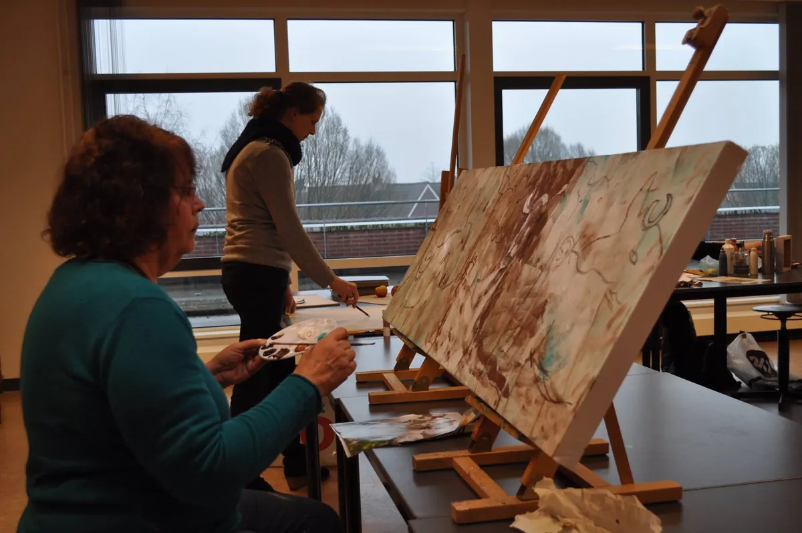

Bedrijvengids
Cursussen en opleidingen in Nijmegen
Een nieuwe taal, eindelijk gitaar leren spelen, bijles voor je kind of een training voor je team: in Nijmegen kun je bijna alles leren. Van kleine taalscholen en muziekdocenten tot trainingsbureaus voor bedrijven.
Op deze pagina vind je alle 81 opleiders in Nijmegen, met openingstijden, een eigen pagina en een kaart. Filter hieronder op wat jij belangrijk vindt, zoals taalcursus, muziekles of bijles.
Uitgelicht

UitgelichtDe Opstap - Het cursuscentrum in NijmegenCipresstraat 154, 6523 HR Nijmegentaalcursusmuzieklescreatieve cursusvolwassenenBekijk aanbod Nog 2 plekken vrijZet jouw opleider hier bovenaan, boven 81 andere opleiders. Met foto's, je actie, een eigen knop en je banner bij onze blogs over cursussen en leren.Het eerste jaar € 99Waar zoek je naar?
Alle opleiders in Nijmegen
Op de kaart
Heb je een opleider in Nijmegen?
Elke opleider staat gratis in onze gids. Wil je opvallen tussen 81 opleiders? Kies dan voor Uitgelicht of Partner.
| Gratis | Uitgelicht € 149 per jaar, eerste jaar € 99 | Partner € 449 per jaar | |
|---|---|---|---|
| Eigen pagina met adres, kaart en openingstijden | ✓ | ✓ | ✓ |
| Tekst door onze redactie | kort | uitgebreid | uitgebreid |
| Foto's op je eigen pagina | 1 | tot 10 | tot 10 |
| Bovenaan deze pagina, met foto en label Uitgelicht | – | ✓ | ✓ |
| Actie en eigen knop (inschrijven, proefles, bellen) | – | ✓ | ✓ |
| Uitgelicht onder onze blogs over cursussen en leren | – | ✓ | ✓ |
| Banner in de partnerbalk | – | bij blogs over cursussen en leren | op de hele site |
| Artikel over je bedrijf en een plek in de nieuwsbrief | – | – | ✓ |
| Overzicht van weergaven en kliks | jaarlijks | jaarlijks | elk kwartaal |
Kies Uitgelicht Alle mogelijkheden · Staat je opleider er al? Klik op je pagina op Dit is mijn bedrijf.
Lees ook
Veelgestelde vragen
Waar kan ik in Nijmegen een taalcursus volgen?
Filter op taalcursus. We schreven ook over Spaans, Frans en Engels leren in Nijmegen.
Is er bijles of huiswerkbegeleiding in Nijmegen?
Ja, filter op bijles en huiswerkbegeleiding.
Kan ik een proefles doen?
Bij veel scholen wel. Filter op proefles.
Gegevens: onze eigen gids, aangevuld met © OpenStreetMap-bijdragers en Overture Maps.